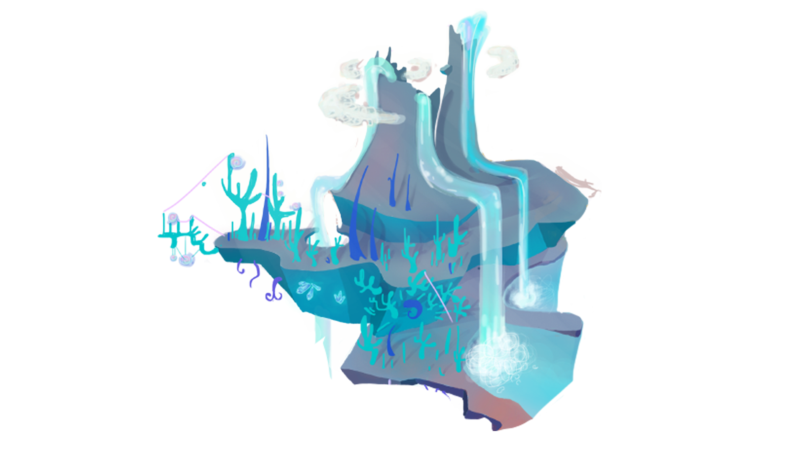

<body class="background_tierraAzul">


    <div class="contMenu">
        
        
    
          
      
    
    <a href="../functionalities/MisionesNi%C3%B1os.php" class="boton1 btn-floating btn-large waves-effect waves-red cyan lighten-2 tooltipped"  data-position="left" data-tooltip="Misiones" > <i class="material-icons">assignment</i></a>
        
        
        
    <a href="Hpyalliz.php" class="boton2 btn-floating btn-large waves-effect waves-red cyan lighten-2 tooltipped texto"  data-position="left" data-tooltip="Personajes"><i class="material-icons">people</i></a>
        
    <a href="../functionalities/Foro.php" class="boton4 btn-floating btn-large waves-effect waves-red cyan lighten-2 tooltipped"  data-position="right" data-tooltip="Foro"><i class="material-icons">record_voice_over</i></a>
        
        
        
        
        
    <a  class="boton5 btn-floating btn-large waves-effect waves-red cyan lighten-2 tooltipped" "btn modal-trigger" data-target="working" data-position="right" data-tooltip="Juegos"><i class="material-icons">videogame_asset</i></a>
        
        
        
        <div id="working" class="modal texto">

                    
            <form action="index.php" method="POST">
                <div class="modal-content">
                    <h3 class="texto">Proyectos</h3>
                    
                    <div class="working-content">
                        <h4 class="texto">KYYAAA!!! Chotto Matte Joven-San. Este apartado aun no esta disponible. Estamos trabajando para tenerla lista lo mas pronto posible. UwU</h4>
                    </div>

                </div>
                
                <div class="modal-footer">
                
                    <a class="btn modal-close waves-effect waves-light-red btn blue-grey"><i class="material-icons">close</i></a>
                </div>
            </form>

            
        </div>
        
        
        
    <a href="../main/index.php" class="boton6 btn-floating btn-large waves-effect waves-red cyan lighten-2 tooltipped"  data-position="right" data-tooltip="Atrás"><i class="material-icons">reply</i></a>
      
        
        
  
    
    
    </div>
        
    <script>
    
  $(document).ready(function(){
    $('.sidenav').sidenav();
  });
        
         $(document).ready(function(){
    $('.tooltipped').tooltip();
  });
     
    </script>
